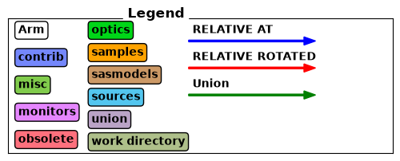
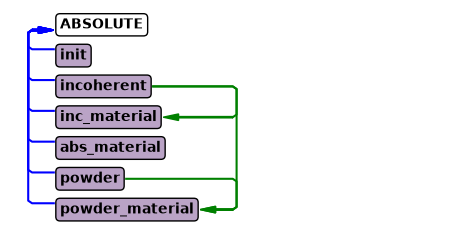
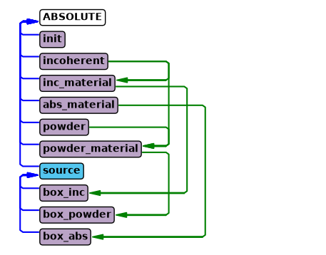
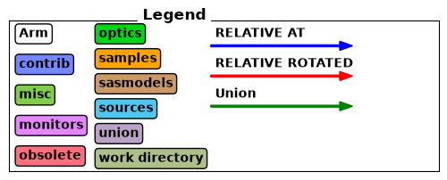
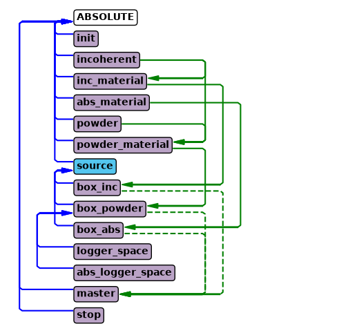
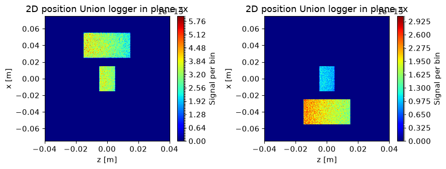
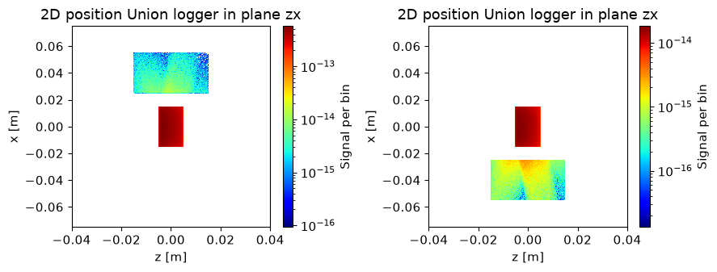

The Union components#
This tutorial is the first in a series showing how the Union components are used. This notebook focuses on setting up material definitions that are used to provide scattering physics to geometries. There are several kinds of Union components, and they need to be used in conjunction with one another to function.
Process components: Describe individual scattering phenomena, such as incoherent, powder, single crystal scattering
Make_material component: Joins several processes into a material definition
Geometry components: Describe geometry, each is assigned a material definition
Union logger components: Records information for each scattering event and plots it
Union abs logger components: Records information for each absorption event and plots it
Union conditional components: Modifies a logger or abs logger so it only records when certain final condition met
Union master component: Performs simulation described by previous Union components
In this notebook we will focus on setting up materials using process components and the Union_make_material component, but the Union components can not work individually, so it will also be necessary to add a geometry and the Union_master. First we import McStasScript and create a new instrument object.
In case of any issues with running the tutorial notebooks there is troubleshooting at the end of this notebook.
import mcstasscript as ms
instrument = ms.McStas_instr("python_tutorial", input_path="run_folder")
Differences between McStas versions#
The Union components can be used in both McStas 2.X and McStas 3.X, but when used in McStas 3.X it is necessary to add an Union_init component named init before any other Union component and a Union_stop component after all other Union components. To make the notebooks compatible with both, the init and stop component can be added inside an if-statement that checks what version of McStas is used.
if instrument.mccode_version == 3:
init = instrument.add_component("init", "Union_init") # This component has to be called init
Process components#
In this notebook we will focus on exploring how to build different physical descriptions of materials, and checking that they behave as expected. We start by looking at the process component for incoherent scattering, Incoherent_process.
instrument.available_components("union")
Here are all components in the union category.
AF_HB_1D_process Union_abs_logger_nD
IncoherentPhonon_process Union_box
Incoherent_process Union_conditional_PSD
Inhomogenous_incoherent_process Union_conditional_standard
Mirror_surface Union_cone
NCrystal_process Union_cylinder
Non_process Union_init
PhononSimple_process Union_logger_1D
Powder_process Union_logger_2DQ
Single_crystal_process Union_logger_2D_kf
Template_process Union_logger_2D_kf_time
Template_surface Union_logger_2D_space
Texture_process Union_logger_2D_space_time
Union_abs_logger_1D_space Union_logger_3D_space
Union_abs_logger_1D_space_event Union_make_material
Union_abs_logger_1D_space_tof Union_master
Union_abs_logger_1D_space_tof_to_lambda Union_master_GPU
Union_abs_logger_1D_time Union_mesh
Union_abs_logger_2D_space Union_sphere
Union_abs_logger_event Union_stop
instrument.component_help("Incoherent_process")
___ Help Incoherent_process ________________________________________________________
|optional parameter|required parameter|default value|user specified value|
sigma = 5.08 [barns] // Incoherent scattering cross section
f_QE = 0.0 [1] // Fraction of quasielastic scattering (rest is elastic) [1]
gamma = 0.0 [meV] // Lorentzian width of quasielastic broadening (HWHM) [1]
packing_factor = 1.0 [1] // How dense is the material compared to optimal 0-1
unit_cell_volume = 13.8 [AA^3] // Unit cell volume
interact_fraction = -1.0 [1] // How large a part of the scattering events
should use this process 0-1 (sum of all processes
in material = 1)
init = "init" [string] // name of Union_init component (typically "init",
default)
-------------------------------------------------------------------------------------
The process components in general have few parameters as they just describe a single physical phenomena. The incoherent process here is described adequately by just the cross section sigma and volume of the unit cell, unit_cell_volume.
Two parameters are available for all processes, packing_factor and interact_fraction. The packing factor describes how dense the material is, and can make it easier to mix for example different powders. It is implemented as a simple factor on the scattering strength. The interact fraction is used to balance many processes when they are used in one material. Normally processes are sampled according to they natural probability for scattering, but this can be overwritten using the interact_fraction, which provides the sampling probability directly, they just have to sum to 1 within a material.
incoherent = instrument.add_component("incoherent", "Incoherent_process")
incoherent.sigma = 2.5
incoherent.unit_cell_volume = 13.8
Making a material#
In order to collect processes into a material, one uses the Union_make_material component. Here are the parameters.
instrument.component_help("Union_make_material")
___ Help Union_make_material _______________________________________________________
|optional parameter|required parameter|default value|user specified value|
process_string = "NULL" [string] // Comma seperated names of physical processes
my_absorption [1/m] // Inverse penetration depth from absorption at standard
energy
absorber = 0.0 [0/1] // Control parameter, if set to 1 the material will have
no scattering processes
refraction_density = 0.0 [g/cm3] // Density of the refracting material. density
< 0 means the material is outside/before the
shape.
refraction_sigma_coh = 0.0 [barn] // Coherent cross section of refracting
material. Use negative value to indicate a
negative coherent scattering length
refraction_weight = 0.0 [g/mol] // Molar mass of the refracting material
refraction_SLD = -1500.0 [AA^-2] // Scattering length density of material
(overwrites sigma_coh, density and weight)
init = "init" [string] // Name of Union_init component (typically "init",
default)
-------------------------------------------------------------------------------------
A material definition thus consists of a number of processes given with the process_string parameter, and a description of the absorption in the material given with the inverse penetration depth at the standard neutron speed of 2200 m/s. For our first test material, lets just set absorption to zero and set our process_string to incoherent, referring to the process we created above.
The name of the material is now inc_material, which will be used in the future to refer to this material.
inc_material = instrument.add_component("inc_material", "Union_make_material")
inc_material.my_absorption = 0.0
inc_material.process_string = '"incoherent"'
If the material contains no physical processes, it is necessary to set the absorber parameter to 1, as it will just have an absorption description. Here we make a material called abs_material.
absorber = instrument.add_component("abs_material", "Union_make_material")
absorber.absorber = 1
absorber.my_absorption = 3.0
The primary reason for having both process components and a make_material component is that it is possible to add as many processes in one material as necessary. Here we create a powder process, and then make a material using the powder and previously defined incoherent processes.
powder = instrument.add_component("powder", "Powder_process")
powder.reflections = '"Cu.laz"'
inc_material = instrument.add_component("powder_material", "Union_make_material")
inc_material.my_absorption = 1.2
inc_material.process_string = '"incoherent,powder"'
At this point we have three materials defined
Material name |
Description |
|---|---|
inc_material |
Has one incoherent process and no absorption |
abs_material |
Only has absorption |
powder_material |
Has both incoherent and powder process in addition to absorption |
The instrument diagram can show the components and their underlying connections. Connections between Union components are shown on the right side. From the diagram it is clear the same incoherent process is used in both inc_material and powder_material. In most cases a user would make individual incoherent processes for each material to set independent incoherent cross sections. It is also visible that powder_material contains two processes and abs_material contains none.
instrument.show_diagram()


Let us define a quick test instrument to see these materials are behaving as expected. First we add a source.
src = instrument.add_component("source", "Source_div")
source_width = instrument.add_parameter("source_width", value=0.15,
comment="Width of source in [m]")
src.xwidth = source_width
src.yheight = 0.03
src.focus_aw = 0.01
src.focus_ah = 0.01
src.lambda0 = instrument.add_parameter("wavelength", value=5.0,
comment="Wavelength in [Ang]")
src.dlambda = "0.001*wavelength"
Adding geometries that use the material definitions#
Here we add three boxes, each using a different material definition and placed next to one another. The material_string parameter is used to specify the material name. The priority parameter will be explained later, as it is only important when geometries overlap, here they are spatially separated, yet the priorities must still be unique.
It is important to note that these three boxes will be simulated simultaneously in the McStas simulation flow, so no need for GROUP statements to have these in parallel. Because they are simulated simultaneously, a ray can go from one to another, which would not be possible with a standard GROUP.
box_inc = instrument.add_component("box_inc", "Union_box", AT=[0.04,0,1], RELATIVE=src)
box_inc.xwidth = 0.03
box_inc.yheight = 0.03
box_inc.zdepth = 0.03
box_inc.material_string = '"inc_material"'
box_inc.priority = 10
box_inc = instrument.add_component("box_powder", "Union_box", AT=[0,0,1], RELATIVE=src)
box_inc.xwidth = 0.03
box_inc.yheight = 0.03
box_inc.zdepth = 0.01
box_inc.material_string = '"powder_material"'
box_inc.priority = 11
box_inc = instrument.add_component("box_abs", "Union_box", AT=[-0.04,0,1], RELATIVE=src)
box_inc.xwidth = 0.03
box_inc.yheight = 0.03
box_inc.zdepth = 0.03
box_inc.material_string = '"abs_material"'
box_inc.priority = 12
Let us take another look at how this changed the instrument diagram. The three geometries have been added, and each have a line to their material component.
instrument.show_diagram()

Adding loggers that show scattering and absorption#
In order to check the three materials behave as expected, we add spatial loggers for scattering and absorption. These are called loggers and abs_loggers, here are the parameters for a logger.
instrument.component_help("Union_logger_2D_space")
___ Help Union_logger_2D_space _____________________________________________________
|optional parameter|required parameter|default value|user specified value|
target_geometry = "NULL" [string] // Comma seperated list of geometry names
that will be logged, leave empty for all
volumes (even not defined yet)
target_process = "NULL" [string] // Comma seperated names of physical
processes, if volumes are selected, one can
select Union_process names
D_direction_1 = "x" [string] // Direction for first axis ("x", "y" or "z")
D1_min = -5.0 [m] // Histogram boundery, min position value for first axis
D1_max = 5.0 [m] // Histogram boundery, max position value for first axis
n1 = 90.0 [1] // Number of bins for first axis
D_direction_2 = "z" [string] // Direction for second axis ("x", "y" or "z")
D2_min = -5.0 [m] // Histogram boundery, min position value for second axis
D2_max = 5.0 [m] // Histogram boundery, max position value for second axis
n2 = 90.0 [1] // Number of bins for second axis
filename = "NULL" [string] // Filename of produced data file
order_total = 0.0 [1] // Only log rays that scatter for the n'th time, 0 for
all orders
order_volume = 0.0 [1] // Only log rays that scatter for the n'th time in the
same geometry
order_volume_process = 0.0 [1] // Only log rays that scatter for the n'th time
in the same geometry, using the same process
logger_conditional_extend_index = -1.0 [1] // If a conditional is used with
this logger, the result of each
conditional calculation can be made
available in extend as a array called
"logger_conditional_extend", and one
would then acces
logger_conditional_extend[n] if
logger_conditional_extend_index is
set to n
init = "init" [string] // Name of Union_init component (typically "init",
default)
-------------------------------------------------------------------------------------
The parameters for the abs_logger are very similar, so the two are added here.
logger = instrument.add_component("logger_space", "Union_logger_2D_space")
logger.set_RELATIVE("box_powder")
logger.D_direction_1 = '"z"'
logger.D1_min = -0.04
logger.D1_max = 0.04
logger.n1 = 250
logger.D_direction_2 = '"x"'
logger.D2_min = -0.075
logger.D2_max = 0.075
logger.n2 = 400
logger.filename = '"logger.dat"'
logger = instrument.add_component("abs_logger_space", "Union_abs_logger_2D_space")
logger.set_RELATIVE("box_powder")
logger.D_direction_1 = '"z"'
logger.D1_min = -0.04
logger.D1_max = 0.04
logger.n1 = 250
logger.D_direction_2 = '"x"'
logger.D2_min = -0.075
logger.D2_max = 0.075
logger.n2 = 400
logger.filename = '"abs_logger.dat"'
Adding the Union master component#
The Union master component is what actually executes the simulation, and so it takes information from all Union components defined before and performs the described simulation. This is the component that matters in terms of order of execution within the sequence of McStas components. As all the previous components have described what the master component should simulate, it has no required parameters. It also does not matter where it is located in space, as it will grab the locations described by all previous Union components that need a spatial location, such as the geometries and loggers.
instrument.component_help("Union_master")
___ Help Union_master ______________________________________________________________
|optional parameter|required parameter|default value|user specified value|
enable_refraction = 1 [0/1] // Toggles refraction effects, simulated for all
materials that have refraction parameters set
enable_reflection = 1 [0/1] // Toggles reflection effects, simulated for all
materials that have refraction parameters set
verbal = 0.0 [0/1] // Toogles printing information loaded during initialize
list_verbal = 0.0 [0/1] // Toogles information of all internal lists in
intersection network
finally_verbal = 0.0 [0/1] // Toogles information about cleanup performed in
finally section
allow_inside_start = 0.0 [0/1] // Set to 1 if rays are expected to start inside
a volume in this master
enable_tagging = 0.0 [0/1] // Enable tagging of ray history (geometry,
scattering process)
history_limit = 300000.0 [1] // Limit the number of unique histories that are
saved
enable_conditionals = 1.0 [0/1] // Use conditionals with this master
inherit_number_of_scattering_events = 0.0 [0/1] // Inherit the number of
scattering events from last
master
weight_ratio_limit = 1e-90 [1] // Limit on the ratio between initial weight and
current, ray absorbed if ratio becomes lower than
limit
init = "init" [string] // Name of Union_init component (typically "init",
default)
-------------------------------------------------------------------------------------
master = instrument.add_component("master", "Union_master")
McStas 3.X compatability#
As mentioned at the start of the notebook it is necessary to add a Union_stop component after all Union coponents in the instrument, this is typically after the last master.
if instrument.mccode_version == 3:
stop = instrument.add_component("stop", "Union_stop")
Although the Union_master component is not told specifically what geometry components to simulate, it picks up the relevant information from the components added before it. The instrument diagram shows these hidden connections.
instrument.show_diagram()


Running the simulation#
Here the McStas simulation is executed as normal.
instrument.set_parameters(wavelength=8.0)
instrument.settings(ncount=3E6, output_path="data_folder/union_materials", suppress_output=True, mpi="auto")
instrument.show_settings()
data = instrument.backengine()
Instrument settings:
ncount: 3.00e+06
mpi: auto
output_path: data_folder/union_materials
run_path: run_folder
package_path: /home/runner/micromamba/envs/mcstasscript-docs/share/mcstas/resources
executable_path: /home/runner/micromamba/envs/mcstasscript-docs/bin
executable: mcrun
force_compile: True
NeXus: False
save_comp_pars: False
Interpreting the results#
The first logger shows scattering, and since the top box has incoherent, and the middle both powder and incoherent, we expect those to show up. We can see the beam attenuation, as the beam originates from the left side.
The second logger shows absorption, and here the top box is absent as it has no absorption cross section. The bottom box is however visible now, as it has absorption but no scattering. As the absorber is quite strong, we see the attenuation here as well.
ms.make_sub_plot(data)

Alternative run to show powder properties#
In order to see the scattering from the powder sample, we restrict the source size to only illuminate the center box with a powder material. A wavelength with powder lines close to 90 deg is selected to ensure the scattering from the center box hits the surrounding boxes.
We choose to show the data with logarithmic colorscale using the name_plot_options method on functions.
instrument.set_parameters(wavelength=2.8, source_width=0.03)
instrument.settings(ncount=5E6, output_path="data_folder/union_materials")
instrument.show_settings()
data = instrument.backengine()
Instrument settings:
ncount: 5.00e+06
mpi: auto
output_path: data_folder/union_materials
run_path: run_folder
package_path: /home/runner/micromamba/envs/mcstasscript-docs/share/mcstas/resources
executable_path: /home/runner/micromamba/envs/mcstasscript-docs/bin
executable: mcrun
force_compile: True
NeXus: False
save_comp_pars: False
ms.name_plot_options("logger_space", data, log=True)
ms.name_plot_options("abs_logger_space", data, log=True)
ms.make_sub_plot(data)

Interpretation of the data#
Now that the direct beam only hits the center box, all rays that enter the surrounding boxes are scattered from that center box. Since the center box contains a powder, the scattered beam is not homogeneous and most of it is in the form of Bragg peaks with certain scattering angles, and we can see two of these intersecting the surrounding geometries.
Troubleshooting#
In case of issues with the notebooks concerning the Union components or McStasScript it is recommended to:
Update McStasScript with python -m pip install –upgrade mcstasscript
Get newest version of Union components (Both library files and components themselves)
Since the Union components need to collaborate, it is important to have the same version of the libraries and components. The newest version of the components can be found here: https://github.com/McStasMcXtrace/McCode/tree/master/mcstas-comps/contrib/union All libraries for McStas are found here: https://github.com/McStasMcXtrace/McCode/tree/master/mcstas-comps/share but only a few are needed for the Union components:
Union_initialization.c
Union_functions.c
Geometry_functions.c
Union_last_functions.c (if on McStas 3.X)
If using McStas 3.X, it could be that the Union_init component and Union_stop component was not added.